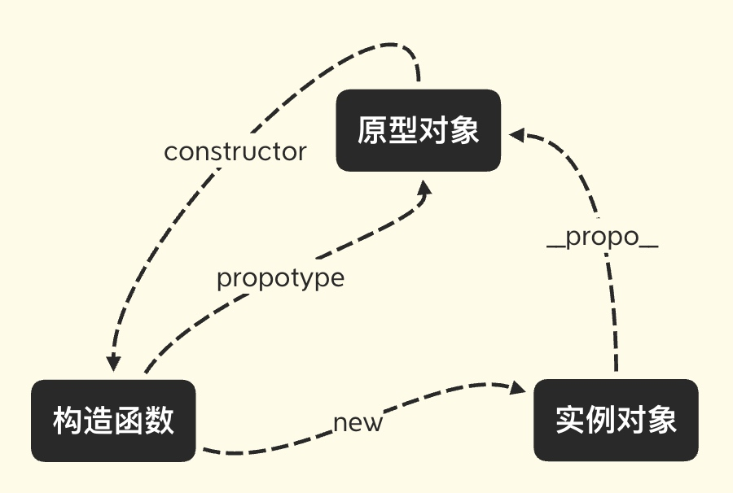
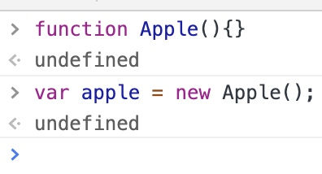
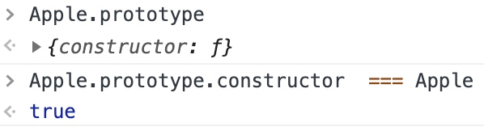
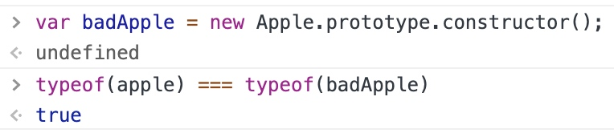
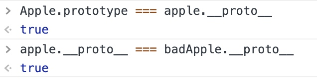
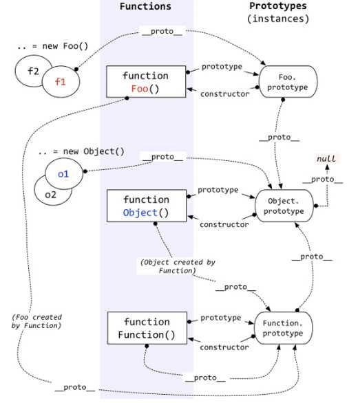

JavaScript 原型和原型链
今天刚开始学习【重学前端】的课程，讲到装箱转换的时候提到了函数的 call 方法，而 call 方法在我的印象中就只有 call 约等于 apply ，然后就再没有然后了。在我想深入了解下 call 方法的时候又发现了有人在同时讲解原型，而于此同时我看到了知乎上的一个贴面试一个5年的前端，却连原型链也搞不清楚，满口都是Vue，React之类的实现，这样的人该用吗？，这我不看内容我就惊呆了，这标题不就是在说我吗。带着各种心情赶紧学习下到底什么是原型和原型链。
原型
prototype [ˈproʊtətaɪp] 原型
OK完了😊！
下面这个图很多大神都有画过，下面记录下我自己的理解和实验。

构造函数视角
函数可以用来做构造器，也就是 constructor，而构造器也可以称为类。
通过构造器 Apple 来创建一个对象对象 apple。

构造函数创建了实例对象，这是构造函数与实例对象的关系。
构造函数有一个属性叫做 propotype，他指向了原型对象。

这里的原型对象写做 [[propotype]]，这里我猜测是为了区分propotype的属性。
原型对象视角
原型对象的 constructor 属性指向了构造函数。

这里用构造器的原型对象的 constructor 方法来创建一个 badApple ，会发现它和 apple 的类型是相等的。
实例对象视角
对象也有一个属性 __propo__，这是一个隐式属性，对象的 __propo__ 指向了他的构造函数的原型对象。也就是说 Apple 的 propotype 属性和 apple、badApple 的 __propo__ 指向了同一个地址。

由函数引出原型链
函数是 JS 中的第一类对象，在 Javascript 中，对象所拥有的函数也同样拥有，也就是说构造函数 Apple 也同样会有 __propo__ 属性去指向他的父类的原型对象，为了理清这乱七八糟的关系，就有了下面“对象-函数-构造函数-实例对象”这样的一个关系图，也就是原型链图。
原型链

这张图理解了上面的内容之后就感觉容易多了，总结一下有以下几点需要注意。
- 任何函数的父类都是 Function 构造函数，也就是任何函数的 __proto__ 指向 Function.prototype，这里同样包含了 Function 构造函数自己。
- Object 构造函数它也是函数，它的的 __proto__ 也指向 Function.prototype。
- Function.prototype 的 __proto__ 指向 Object.prototype，这也就是为什么说函数也是对象。
- Object.prototype 的 __proto__ 是 null。
ES6 中的类
类的写法也是由原型运行时来承载的，逻辑上 JavaScript 认为每个类是有共同原型的一组对象，类中定义的方法和属性会被卸载原型对象之上。此外最重要的是类提供了继承能力。
class Animal {
constructor(name) {
this.name = name;
}
speak() {
console.log(this.name + ' makes a noise.');
}
}
class Dog extends Animal {
constructor(name) {
super(name); // call the super class constructor and pass in the name parameter
}
speak() {
console.log(this.name + ' barks.');
}
}
let d = new Dog('Mitzie');
d.speak(); // Mitzie barks.
以上代码创造了 Animal 类，并且通过 extends 关键字让 Dog 继承了它，展示了最终调用子类的 speak 方法获取了父类的 name。比起早期的原型模拟方式，使用 extends 关键字自动设置了 constructor，并且会自动调用父类的构造函数，这是一种更少坑的设计。所以当我们使用类的思想来设计代码时，应该尽量使用 class 来声明类，而不是用旧语法，拿函数来模拟对象。
super 关键字用于访问和调用一个对象的父对象上的函数。
在构造函数中使用时，super关键字将单独出现，并且必须在使用this关键字之前使用。
super([arguments]);
// 调用 父对象/父类 的构造函数
super.functionOnParent([arguments]);
// 调用 父对象/父类 上的方法